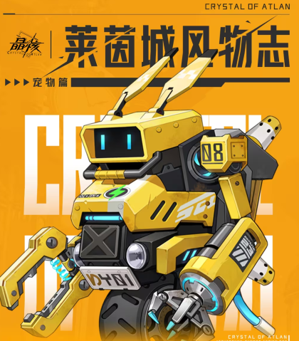
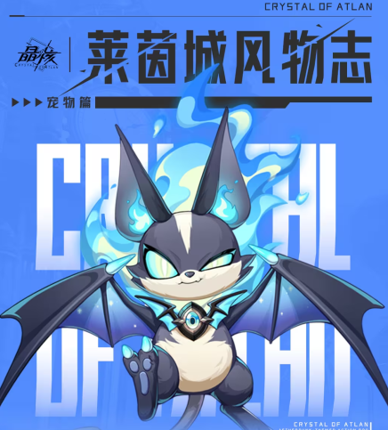
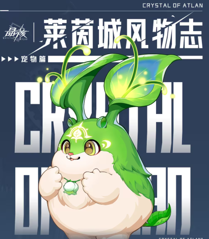
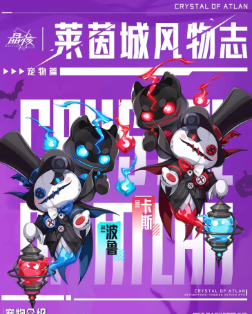
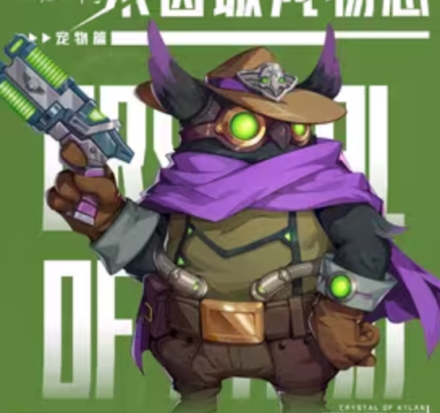
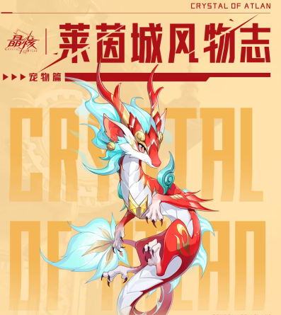
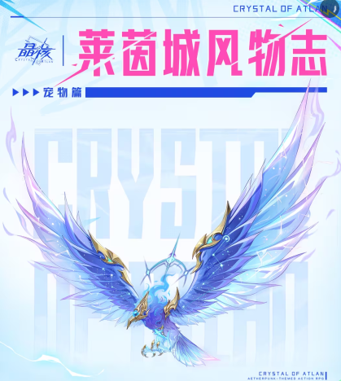
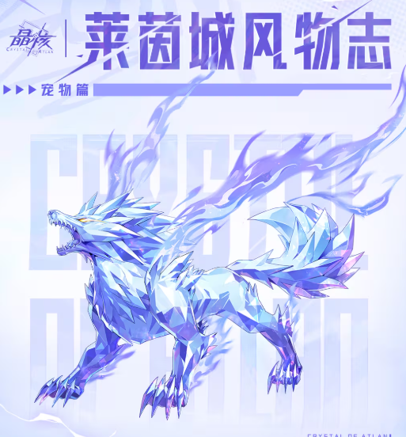
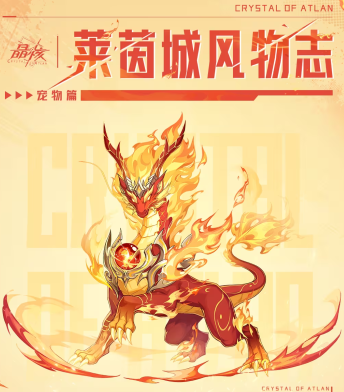

Guide
อัพเดทเมื่อวันที่ 13 ตุลาคม 2025
Pets
ข้างล่างคือไทมไลน์ของเซิฟเวอร์จีน
| เวลา | สกิล | สัตว์เลี้ยง |
|---|---|---|
| 30 สิงหาคม 2023 | Main Skill:
Drop Koto at a designated area and create electric field that gathers nearby enemies and increase player's speed by 40%, gradually decaying in 8 seconds. Use the skill again to drag player to Koto's side and increase 15-25% DMG Bonus of next attack based on distance of the pull.
Passive: - Every 15 seconds, Player's next attack explode with 1722.5% DMG. - Every perfect dodge, increase +3 All-Atribute, up to 5 stacks. - +6% DMG to BOSS, +4% DMG to Mechanical enemies. STR: 345 INT: 345 CDMG : 11% Base HP: 6.8% |
 |
| 30 สิงหาคม 2023 |
Main Skill: Casts 18 Homing fireballs (99% DMG) and deal explosions (1296% DMG) on the location, each fireball increase 0.8% DMG Bonus, up to 5 stacks. Passive: - Everytime player cast skill, summon a ghost with high hit-rate and attack nearest enemy, burning them (477% DMG). The cooldown for this ghost is 6 seconds. When Main Skill activated, the ghost will be detonated, dealing damage (265% DMG). - Every 25 seconds, next player attack will heal 122% ATK, and gain 10 seconds buff, dealing +7.5% DMG against bur ning enemies. - 15% extra ore when mining. STR: 216 INT: 216 DMG to Scorched : 4.5% CD Rate: 36 |
 |
| 7 ตุลาคม2023 |
Main Skill: If there's no allies below 80% HP within 30m, shoot seeds at enemies (324% DMG). If there is allies below 80% HP within 30m, heal the allies (10000+40% ATK), with priority of lowest HP allies. The heal gives [Regeneration] effect, recovering 2% max HP every seconds, for 6 seconds. After using the skill, for the next 15 seconds, player will leave a trail of flowers when moving, and will give [Regeneration] effect to anyone touching it. Passive: - Everytime player get healed, increase DMG Bonus by 1.5%, up to 5 stack, lasting 20 seconds. - Allies within 20m gain attack power bonus (up to 5% ATK) based on their current HP percentage (include shield HP) - 15% extra material when gathering. STR: 216 INT: 216 ATK : 51 Base HP: 1710 |
 |
| Gentleman Piaopiao |
Main Skill: Cass and Bobelu will appear in rotation to provide player with different buffs and effects. After using the skill, player will switch to Cass's aura, and gain attribute bonus for 5 seconds depending on the aura, boosting attribute gain by 100%, and resonance energy gain by 300%. Everytime player switch the form, the player's next attack will deal additional 1000% DMG. When cass appear, increase player's DMG Bonus by 5%, ASPD+25, CD Rate +25. When Bobelu appears, increase player's DMG Bonus by 5%, gains 2.5% resonance energy/second, energy cannot decrease, all energy gained is gone once Boberu leaves. Passive: - Everytime player get use pet skill, get All-attribute +18 for 9 seconds. - When dealing DMG, provide 10 seconds buff, 25% chance dealing 10% additional DMG, 75% chance dealing 5% additional DMG. - Deal +4% DMG to BOSS, deal extra +3% DMG when airborne. STR: 414 INT: 414 ATK : 115 Base HP: 8.1% |
 |
| 20 พฤษจิกายน 2023 |
Main Skill:
Throw 3 umbro-attribute grenade (2880% DMG), add weakness debuff to enemy for 20 seconds, reducing resistance to all attribute by 10 points, up to 3 stacks. Enemies debuffed will deal -5% DMG. Passive: - Enhance player's attack with Umbro attribute, +6 Umbro ENH - Level 1-60 active level skills +1 - 15% chance double food when cooking. STR: 216 INT: 216 DMG to Exhausted : 4.5% Base HP: 1710 |
 |
| 28 ธันวาคม 2023 |
Main Skill:
Throw up to 37 snowballs (136% DMG), reducing enemy player's speed, up to 5 stacks. When fully stacked, the next snowballs deal 30% more DMG. Passive: - Player attack deal +4.3% additional DMG - When player use finisher skill, summon another little snowman near player, shooting up to 37 snowballs (56% DMG), 25s cooldown. - 15% chance double potion when crafting potions, this passive is activated even if the pet isn't taken to battle. STR: 216 INT: 216 DMG to Slow : 4.5% Base HP: 1710 |
|
| 26 มกราคม 2024 |
Main Skill: Summon a magic field for 15 seconds, increasing the damage taken by enemies within by 8% DMG from player. Upon casting the skill, 1 out of 2 effects can be chosen. [Golden Dragon Shield] When player's HP drop below 40%, immediately restore 40% Max HP. Last 10 seconds, can trigger 3 times. [Vermillion Dragon Wrath] Increase player's DMG Bonus by 16% for 10 seconds.When in [Complete True Dragon Form], gain additional [Red Dragon's Rage], each time player lands critical hit, deal additional 360% AOE DMG, extends duration of [Golden Dragon Shield] and [Vermillion Dragon Wrath] by 1 second, 2s cooldown, up to 5 triggers. Passive: - Everytime player cast skill, reduce the pet skill by 2.5s, can be triggered up to 10 times. - After using pet skill, player attack deal 15% additional DMG for 28s. - Increase player all-attribute DMG + 7.5% STR: 345 INT: 345 DMG Bonus : 7% Base HP: 6% |
 |
| 24 April 2024 |
Main Skill: Cast a root-bamboo spell on location, then spins and slam the bamboo, for 3-hit explosion (4500% DMG).Afterwards, an additional panda is summoned to perform [Martial Fist Technique] (1296% DMG) and player gains 20% CDMG for 12s. Passive: - When player deals DMG, summon a panda clone, performing [Falling Dragon Fist] (12 hit, 265% DMG), 20s cooldown. - When player deals DMG, increase player MSPD by 4%, and randomly deal additional DMG of 0-10%. This effect doubles within 15s of casting Pet Skill. - Incease DMG to BOSS by 6%, DMG to broken-shield enemies +4%. STR: 345 INT: 345 CDMG : 14% Base HP: 6.8% |
|
| 31 July 2024 |
Main Skill: Deal AOE DMG in circle (2520% DMG), grants full stack of [Howling Blue Flame], causing player's basic attack to deal additional DMG (3.2% DMG/stack) based on number of stacks. Cast again to activate [Feather Rain], consuming all stacks and deal DMG based on stacks consumed. [Feather Rain] have independent cooldown of 15s, and not affected by cooldown reduction. Max stacks = 6. Passive: - Level 1-70 Active Skills +1, 64% chance of gaining [Howling Blue Flame] stack when using skills. - All-attribute +40 - Incease DMG to boss by 6%, Increase DMG Bonus by 6% STR: 414 INT: 414 DMG to BOSS : 12% Base HP: 8.1% |
 |
| 30 October 2024 |
Main Skill: Player gains shield equal to 50% Max HP and apply [Magic Thorn], making attacks deal additional 30% DMG , and increase 11.4% DMG dealt to BOSS for 6 seconds. During this period, each time player deals DMG to enemy, player gains additional 14% Max HP Shield, this effect have 0.5s cooldown. When the shield duration ends ,shatters and deal DMG (up to 3600% ATK, every 10% shield becomes 600% DMG, max 6000% DMG) to surrounding enemy based on remaining shield value and scale with [Magic Thorn]. If the remaining shield value when shattering is greater than 50% Max HP, the duration of [Magic Thorn] is extended by 6s. Passive: - After pet skill is used, increase player MSPD by 8.6%, Shield-breaking effeciency by 8.6%, all-attribute DMG by 8.6%. Lasting 20s. - When attacking enemy, the pet deals 4760% DMG and increase 26.5% MSPD for 3 seconds, each enemy have independent 25s cooldown. When enemy is hit by explosion of the shield, the cooldown resets. - Increase DMG to BOSS by 10.8%, increase DMG to Debuffed by 5.4%, increase MSPD by 5.4%. STR: 345 INT: 345 All-attribute : 32 Base HP: 6.8% |
 |
| 22 January 2025 |
Main Skill: A storm that burns everything, dealing 8960% total DMG and inflict burning on enemies. Player gains [Auspicious Blessing] for 15 seconds, DMG to Debuffed +36%, All-Attribute DMG +14.4%. Passive: - Deal 2128% DMG when player hit enemy with skill, restores 2000 resonance energy, reduce the Pet Skill by 5 seconds. This effect can be triggered every 10 seconds. - When dealing DMG, increase DMG Bonus randomly by 0-16%, during [Auspicious Blessing], the DMG increase is fixed at max value. - Increase all-attribute DMG by 9%. STR: 431 INT: 431 DMG to Debuffed : 12.5% Base HP: 8.5% |
 |